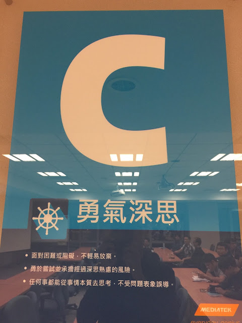

從「鞭地」提問重新反省：任何事都要從事情本質去思考，不要受問題表象誤導
這次的廣州姿勢跑法教練認證課程中有一位很特殊的學員(將來的 POSE 教練)，他是前中國國家隊的一級運動員。雖然他的專項不是跑步，但因為一級運動員都會集中訓練，所以他很常聽到短跑教練都會教選手練「鞭地」的動作。他聽完課後，很激動地跑來找我，以知之甚晚的懊悔語氣跟我說：「就我所知每一位教練都這樣教選手吶！我現在才知道這是不對的技術訓練動作！真是太遺憾了！」我一直記得他的表情，充滿著吸收到新知的興奮與不知所措的激動情緒。
「鞭地」這個用語是我第一次聽到，但我立即知道他的意思。在短跑項目中，當選手騰空時前腿一定會跑到身體前方，接著前腿會像鞭打地面的動作一樣，快速回到臀部下方。幾乎每位短跑選手都會有這個動作，所以教練與選手也認為該刻意練這個動作。
但事實上這個動作是結果、是現象，不應主動執行。
它是什麼的結果呢？
前腳回到臀部下方的現象，是後腳快速拉起之後回到臀部下方的結果。因為身體是個平衡系統，人的身體在空中時，後腳快速拉回，前腳就會自動快速歸位。每一個人都可以在原地試試看，先把雙腳前後打開(類似弓箭步)，向上跳起後若快速把後腿的腳掌拉回臀部下方，前腿的腳掌就會自動落在臀部下方。所以後腳是主動，前腿的動作是被動產生的結果。
如果跑者主動向下向後「鞭地」，會產生下面幾項缺點：
一、前腿腳掌會提早觸地，騰空時間會縮短、觸地時間會延長。前腿不應主動做任何事，而是應該讓它隨著重力自由落下。
二、造成後腳拉起太慢或上拉高度不夠。前腿(有地心引力幫忙)本來就會自然落下，但後腿可不會自動上拉。上拉太慢或高度不夠會使向前落下的角度變小，或是落下的速度變慢。這些都會降低跑速。
三、給前腿形成多餘的壓力，增加受傷的風險。被動落下時的壓力是全身一起承擔，但主動鞭地時是以前腿以臀為支點向下施力，如此一來主動鞭地的多餘壓力變成只施加在臀部以下的大腿、小腿、腳踝與腳掌上。
--
如影片中所示：在網路上可以找到非常多鞭地的練習(主動向下壓腿的練習動作)。這類訓練動作是建立在衝刺跑者的動作表象之上。這類訓練法的邏輯是：每位跑者都有這個動作→所以我們要刻意練這個動作。但其實前腿歸位到臀部下方的動作是表象、是結果，只要了解跑步動作的本質，清楚地以力學方式回答出「我們是怎麼前進的呢？」這個問題，就能了解後腿主動快速上拉時，前腿自然會快速歸位回到臀部下方，使落地時沒有煞車效應。
在 Pose Method 的理論裡，快速上拉的目的是為了快速回到關鍵跑姿；而快速回到關鍵跑姿的目的是為了有效利用體重向前落下。如果後腿拉得太慢，留在身體後方，向前落下的角度和速度就會變慢→如此速度當然就會變慢。反之，想要跑得更快，後腿就必須快速回到臀部下方，身體才能以一個整體往前落下。如果跑者專注在「鞭地」的話，因為前腿會提早觸地所以「拉」的時間不夠；速度也會不夠快，因為人只能專心在一件事情上，跑者想著前腿鞭地，後腳必然會慢，就算每步慢 10 毫秒，對 100 公尺的短距離衝刺跑者來說也會慢 0.4~0.45 秒(菁英跑者在百米的比賽中大約會跑 40~45 步)。
探究運動技術的本質是一件相當重要的工作。技術理論就像羅盤的指針，理論錯了，訓練的方向也會跟著偏掉。目前許多跑步的理論(游泳與騎車的理論也是一樣)都是建立在視覺所見的表象上。從上述這個「鞭地」的例子可以瞭解：看得見的表象並非一定是技術的本質，所以我們必須努力確認技術的本質，才能確立訓練的方向。
不管在任何領域，都要思考「事情的本質」，不要被問題的表象所誤導。我記得有一次晚餐時姿勢跑法的教練洪堃慆曾問我：「我要怎麼知道這是錯的問題，還是對的問題？」我記得我是這樣回覆的：「在任何領域，都要先問一大堆錯誤的問題，摸索一段時間之後才能找到正確的提問角度，切入事情的核心。」而核心是永遠不變的關鍵問題：「〇〇的本質是什麼？」
我記得去年十二月到聯發科演講時，看到他們公司裡到處懸掛著以「C」與「勇氣深思」為標題的海報，海報下有一句話：「任何事都能從事情本質去思考，不受問題表象誤導」。但在這個社會中以切入本質的方式來發言或做事，是需要勇氣的！

--
臉書提問整理：
余淏：徐老師，我在一個訪談節目裡聽一個練武術的嘉賓講過，武術的「打法」和「練法」相反。從這個角度來講，鞭地是否有它存在的價值，比如對關節活動性的提高，肌肉的伸展，儘管其為被動動作。
余淏你好：謝謝你提出，我一直也都是這麼認為的。只是這篇文章在強調許多人把鞭地當成衝刺的「技術」來練，這會是大問題。但如果把這個動作當成你說的提高下肢的彈性、後大腿的延展性、敏捷性或關節的活動度，那就完全沒問題了。就像馬克操對彈性和關節活動度很好，但無法提升技術動作的知覺一樣。(影片中的 B Skip 就是馬克操的一種)
我看過影片了。很有啟發。所以徐浩峰老師說的「打法」接近這邊說的跑步「技術」，是真的要用在賽場上的；而「練法」有很多種，它不一定會在真正的跑步動作中出現，這像力量訓練中的深蹲、跳繩、舉重或馬克操都是屬於練法。
以功夫來說：套路是打法；站樁，是很重要的練法。